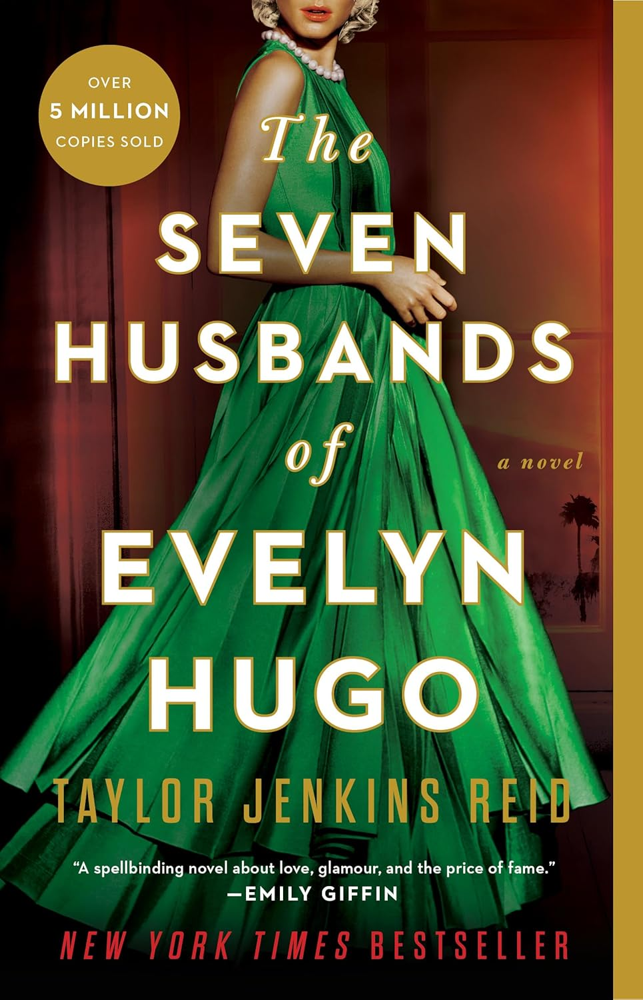

←

Details:
Aging and reclusive Hollywood movie icon Evelyn Hugo is finally ready to tell the truth about her glamorous and scandalous life. But when she chooses unknown magazine reporter Monique Grant for the job, no one is more astounded than Monique herself. Why her? Why now?
Monique is not exactly on top of the world. Her husband has left her, and her professional life is going nowhere. Regardless of why Evelyn has selected her to write her biography, Monique is determined to use this opportunity to jumpstart her career.
Summoned to Evelyn’s luxurious apartment, Monique listens in fascination as the actress tells her story. From making her way to Los Angeles in the 1950s to her decision to leave show business in the ‘80s, and, of course, the seven husbands along the way, Evelyn unspools a tale of ruthless ambition, unexpected friendship, and a great forbidden love. Monique begins to feel a very real connection to the legendary star, but as Evelyn’s story near its conclusion, it becomes clear that her life intersects with Monique’s own in tragic and irreversible ways.
Personal Notes:
- I did not expect to love this book so much
- The build up is amazing
- I really love Evelyn and Harry's Bond
- The ending is a big plot twist